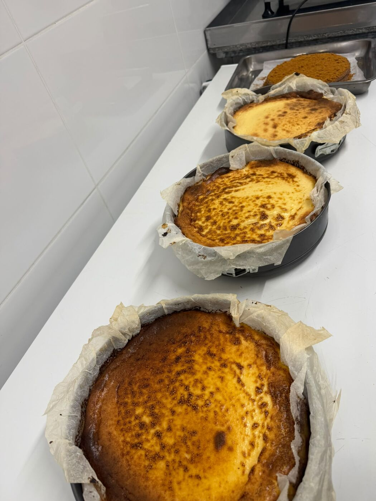
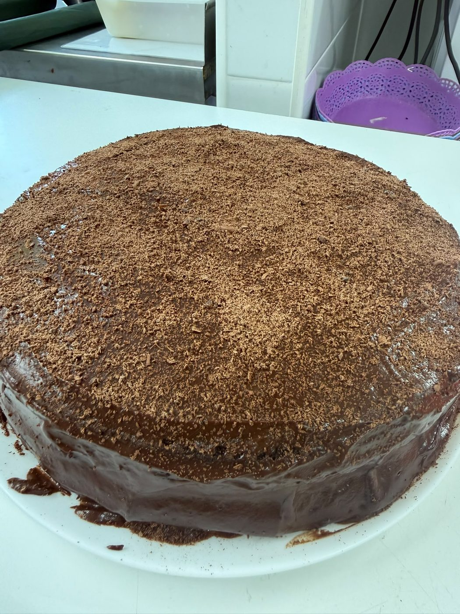
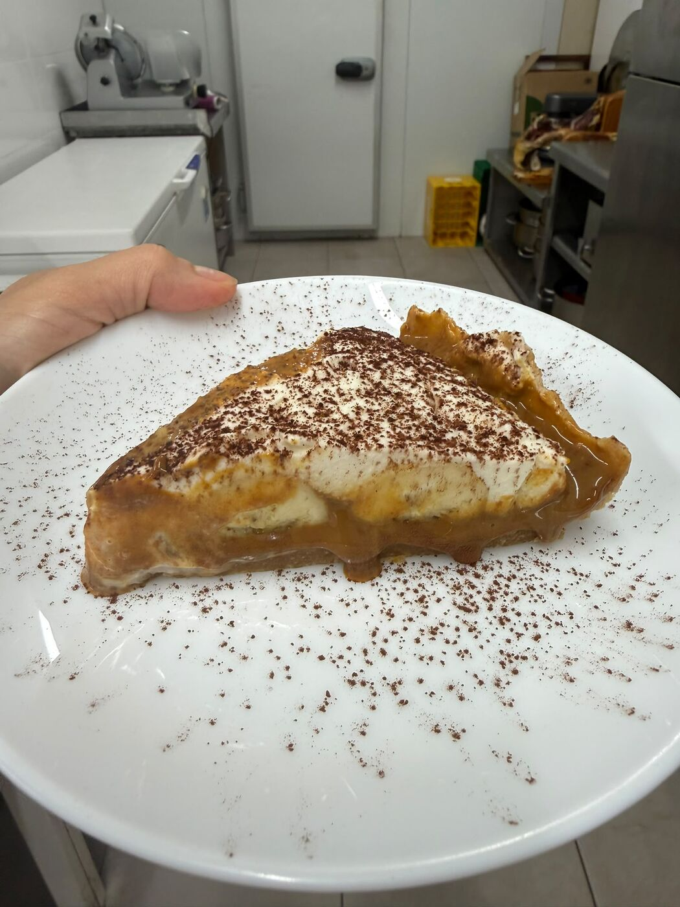

Tarta de queso al horno
Cremosa por dentro y bien tostada por fuera. La clásica que nunca falla.
Repostería casera · Alcoy
Tarta de queso, torta de chocolate, banoffee y pan de queso. Cada postre lo cocina Sara en pequeñas tandas, para que llegue fresco a tu mesa.
La carta
Todo se prepara por encargo. Elige tamaño, fecha y Sara se encarga del resto.

Cremosa por dentro y bien tostada por fuera. La clásica que nunca falla.

Bizcocho esponjoso de chocolate, cubierto de ganache y chocolate rallado. Para los muy chocolateros.

Base de galleta, toffee, plátano, nata montada y cacao. Al estilo brasileño, con acento de Alcoy.
El clásico bocado brasileño: dorado por fuera, tierno y con mucho queso por dentro. Bolsas de 10 unidades, congeladas para hornear en casa o ya horneadas.
Fácil y sin prisas
Mira la carta y los precios, y rellena el formulario con tamaño, cantidad y fecha.
El formulario te abre WhatsApp con el pedido ya escrito. Sara te confirma la disponibilidad.
Recoge tu postre en Alcoy o pide entrega a domicilio en la ciudad.
Quién cocina
Sara hornea en Alcoy tartas y dulces con receta propia, a mano y en pequeñas cantidades. Le gustan los sabores de siempre bien hechos: mucho chocolate, queso cremoso y caramelo.
Cada encargo se prepara expresamente para ti, para que lo que llegue a tu mesa esté en su mejor momento.
Del obrador a tu mesa
Tu encargo
Rellena el formulario y se abrirá WhatsApp con el mensaje listo para enviar a Sara. No pagas nada hasta que ella confirme tu pedido.
O escríbele directamente por WhatsApp →Dudas habituales
Con al menos días de antelación. Para fechas señaladas (cumpleaños, fiestas, Navidad) cuanto antes mejor, porque las plazas son limitadas.
Puedes recogerlo en Alcoy (Sara te dará el punto exacto al confirmar) o pedir entrega a domicilio dentro de la ciudad.
Se acuerda por WhatsApp al confirmar el pedido: efectivo, Bizum o transferencia.
Cuéntaselo a Sara en las notas del pedido. Los postres se elaboran en una cocina donde hay chocolate, frutos secos, lácteos, huevo y gluten, así que no se pueden garantizar trazas.
Las tartas con nata o queso se guardan en nevera y están en su mejor punto durante los 3–4 primeros días. La torta de chocolate aguanta bien un par de días a temperatura ambiente, tapadas.